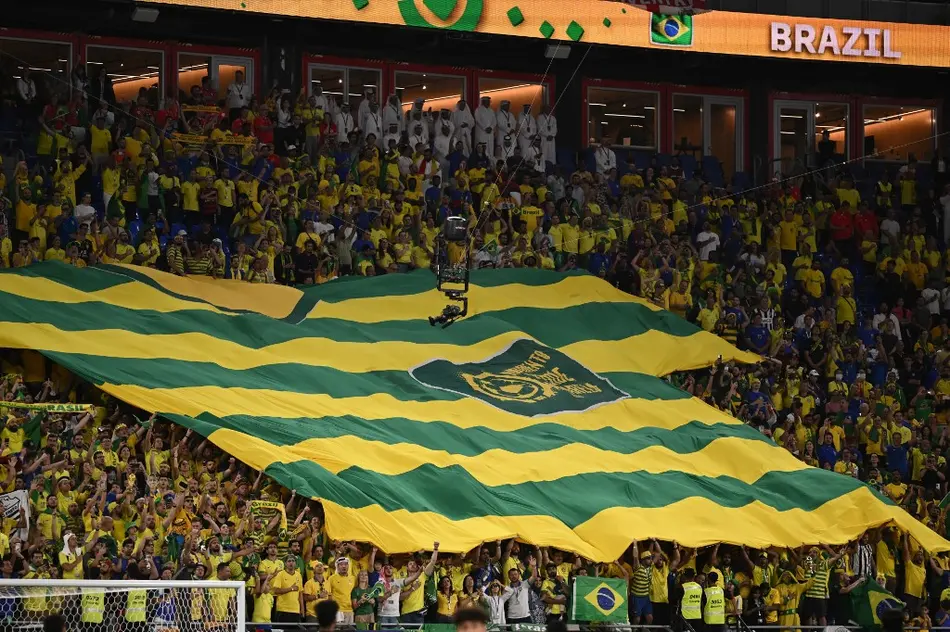
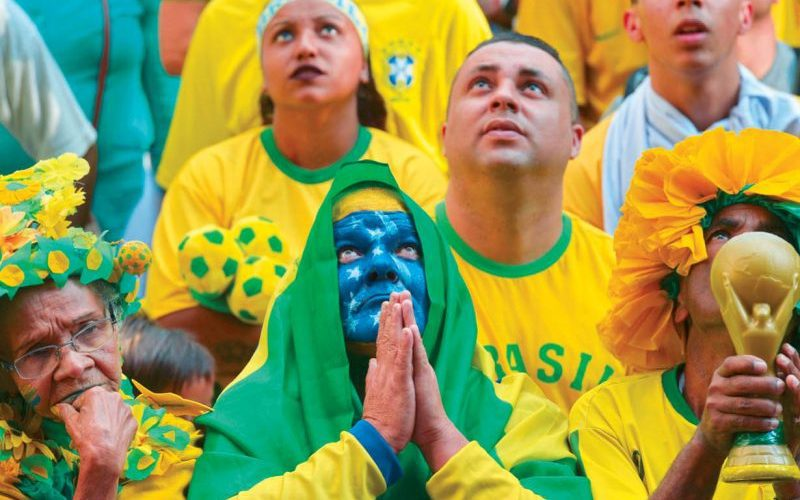

brasil
Marrocos disputará a Copa do Mundo pela sétima vez em 2026 e alcançará um feito inédito: será sua terceira participação consecutiva no torneio. A seleção chega determinada a consolidar sua força após a histórica campanha de 2022 e mostrar que o quarto lugar no Catar não foi por acaso. Os Leões do Atlas serão o primeiro adversário do Brasil na fase de grupos, em 13 de junho.
Seleção
HISTÓRIA
A melhor Copa
do Mundo do
Marrocos
A melhor campanha de Marrocos foi em 2022, quando alcançou as semifinais e terminou em quarto lugar — o melhor resultado de qualquer seleção africana na história dos Mundiais. Liderando o grupo com Croácia, Bélgica e Canadá, eliminou Espanha e Portugal no mata-mata antes de cair diante da França.
1998
Uma das campanhas mais dolorosas. A Escócia, adversária naquela fase de grupos, foi derrotada por 3 a 0 pelos marroquinos — mas Marrocos não avançou, caindo na fase de grupos apesar da vitória
1986
A única outra participação marroquina no mata-mata antes de 2022. Marrocos avançou em primeiro lugar no grupo, à frente de Inglaterra, Polônia e Portugal, mas foi eliminado pela Alemanha Ocidental nas oitavas de final.


Momentos inesquecíveis
01
Em 2022, Achraf Hakimi cobrou o pênalti decisivo contra a Espanha com uma cavadinha no meio do gol.
02
Em 2022, O goleiro Yassine Bounou foi decisivo nas disputas de pênaltis contra a Espanha, defendendo duas cobranças e garantindo a classificação às quartas de final.
03
Marrocos foi a primeira seleção africana e árabe a alcançar as semifinais de uma Copa do Mundo.
04
Em 2010, teve vitória contra a França, resultado muito comemorado pela torcida mexicana
05
Em 1986, Segurou o empate em 0 a 0 com a Alemanha Ocidental até os 42 minutos do segundo tempo antes de ser eliminada — a mesma Alemanha que chegaria à final.
Detalhes
culturais do país